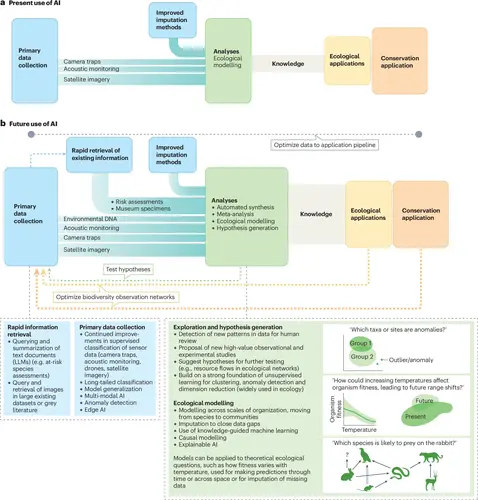

Nature Reviews Biodiversity (Nat. Rev. Biodivers.) | ISSN 3005-0677 (online)
A new landmark study published in Nature involving The Ohio State University faculty highlights how artificial intelligence (AI) is transforming the way scientists study biodiversity. Researchers from around the world have found AI can help fill major gaps in our understanding of species, their habitats, and how they interact with each other, perhaps in ways never imagined.
Despite the vast amount of data collected by scientists, there are still many unanswered questions about the natural world. How many species exist? Where do they live and migrate? How are they affected by environmental changes, and when is the tipping point reached?
The study, “Harnessing artificial intelligence to fill global shortfalls in biodiversity knowledge,” is co-authored by Tanya Berger-Wolf, Director of the Translational Data Analytics Institute and a Professor of Computer Science Engineering, Electrical and Computer Engineering, as well as Evolution, Ecology, and Organismal Biology (EEOB) at Ohio State. Marta Jarzyna, EEOB associate professor, also serves as a co-author.
“We are in the middle of a biodiversity crisis, and AI gives us a powerful new tool to track and protect species,” Berger-Wolf said. “By using AI, we can make better conservation decisions before it’s too late.”
In her role, Berger-Wolf is leading the National Science Foundation funded Imageomics Institute and the US-Canada funded AI and Biodiversity Change (ABC) Global Center. As a computational ecologist, her research is at the unique intersection of computer science, wildlife biology, and social sciences.
The new study, led by Laura Pollock of McGill University and Justin Kitzes of University of Pittsburgh, features contributions from leading experts across multiple institutions worldwide, identifies seven major shortfalls in biodiversity knowledge and highlights how AI-driven approaches can address them. AI-driven models, such as those trained on satellite imagery and environmental DNA, are already demonstrating their ability to predict species distributions and detect new organisms.
The study also discusses BioCLIP, an AI-powered image-recognition tool led by Ohio State graduate students Samuel Stevens and Lisa Wu, which is designed to leverage the biological information and imagesdetect highly-detailed species traits to aid in taxonomic classification.
Watch a short video of Stevens discussing the BioCLIP tool.
Berger-Wolf said the new research in Nature shows how AI can help answer these questions by analyzing massive datasets faster and more accurately than humans ever could.
How AI is Making a Difference
The study highlights several key pathways AI is helping scientists:
• Finding new species—AI tools like BioCLIP can analyze images and detect species that scientists haven’t identified before.
• Mapping habitats—AI models can use satellite images to track where species live and predict how their habitats are changing.
• Understanding ecosystems—AI helps us study how animals and plants interact, which is crucial for protecting biodiversity.
Berger-Wolf said one of the biggest challenges in conservation is that some species are hard to find, and many live in remote areas. AI-powered tools can scan thousands of images, sounds, and even environmental DNA (eDNA) samples to find clues about species that would otherwise go unnoticed.
“Another key role for AI that has largely gone unrealized in ecology is the ability of models to not only automate the detection, classification and analysis of data features that are already known to humans but also to discover novel features and patterns that had not previously been described or even imagined,” the study reports.
What’s Next?
Scientists believe AI will play an even bigger role in conservation in the coming years. The study calls for better collaboration between AI researchers and ecologists to ensure these technologies are used effectively.
As environmental changes and habitat destruction continue to threaten biodiversity, AI offers a way to track and protect life on Earth like never before. With the right tools and global cooperation, AI tools can help save species and ecosystems before they disappear.